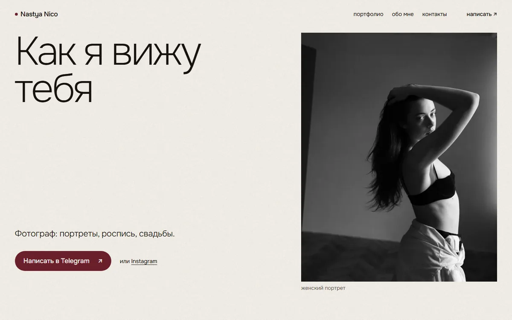
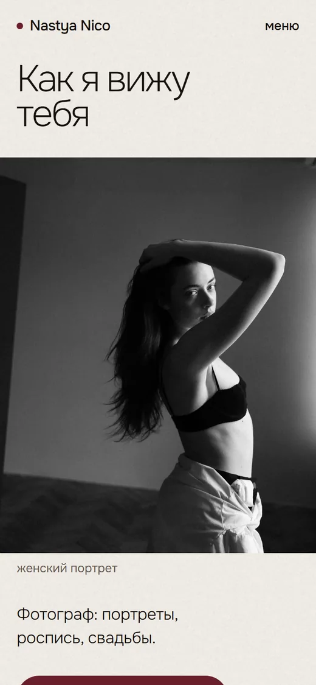
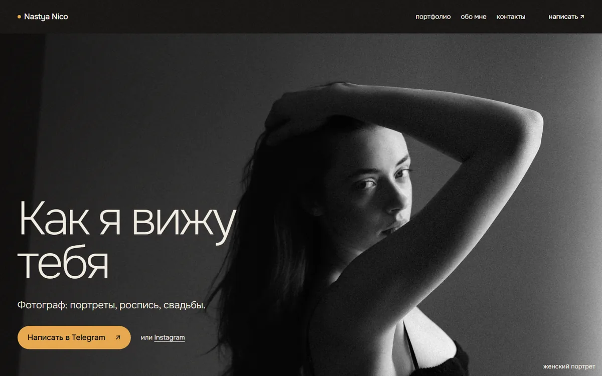
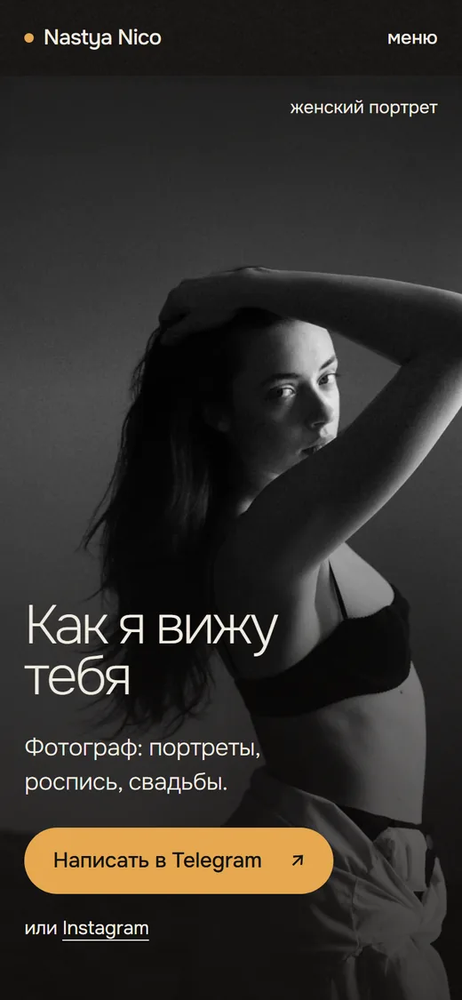

Светлый, портрет рядом с заголовком
Светлая бумага и тушь, бордо со штор на росписи, румянец пионов в финале. Только гротеск, без рукописного.
Ниже два варианта главной страницы. Фотографии и тексты взяты с вашего сайта. Обе страницы живые: откройте их с телефона и полистайте.
Это советы, решать вам. С ними проще понять, что вы снимаете, и сразу написать. В обоих вариантах всё это уже есть.
Сейчас на главной один портрет и текст, а съёмки лежат в разделе «Портфолио». В вариантах портрет, роспись и свадьба видны сразу под первым экраном, по три кадра.
Кнопка «Написать в Telegram» стоит на первом экране, под портфолио и в конце страницы. Человек решился и сразу пишет, без поисков.
Страница «Услуги» сейчас пустая. В вариантах у каждого направления короткая метка: индивидуальная съёмка, для двоих, для жениха и невесты. Стоимость остаётся для переписки.
Сейчас «Я — nastya.nico» стоит прямо на портрете, и легко подумать, что на фото вы. В вариантах у кадра подпись «женский портрет», а «Я — Настя» живёт в блоке «обо мне».
Один светлый, другой тёмный, как ваш нынешний сайт. В обоих мало слов, говорят кадры. Четыре блока: первый экран, портфолио, обо мне и связь.


Светлая бумага и тушь, бордо со штор на росписи, румянец пионов в финале. Только гротеск, без рукописного.


Тёмный, как нынешний сайт, но тёплый: графит, слоновая кость, янтарь закатного леса. Одна рукописная строка «привет, друзья!» в блоке «обо мне».